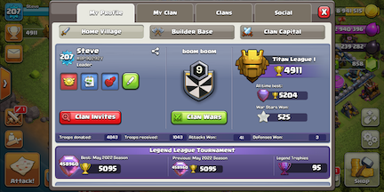
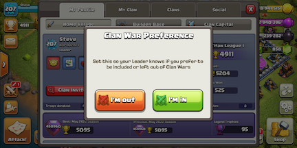

General
In return for being part of the clan and receiving clan perks the following rules are mandatory
- Clan wars in/out to be set on your profile at all times
- If you indicate you are 'in' then you must use all available attacks
- Donations to be kept at a reasonable level - close to 1:1 or better
- Donate to members clan castles lower down on war map
- Attack with a full army including clan castle troops and siege machines
- Elder awarded/revoked for participation in war
Clan War Leagues
- Minimum requirement Elder and TH11
- Fighting spots given based on clan rank
- Heroes to be up during league
- Clan castles to be filled with Max level troops (Lava Hound/Ice Golem/Headhunters)
Ranking Calculation
- Clan members sorted by rank updated automatically via API
- Maintains history for last 10 wars - excluding league wars
- Rank = 100 per war attack with modifiers
- Donations up to 10% bonus or penalty
- +10 per star
- 0-25 for destruction percentage
- 20% more star & destruction bonus if defending TH is a higher level
- 75% of star & destruction bonus if attacking 3 or more lower on the map
Clan Games
- Mandatory participation until max clan reward level has been achieved
Raid Weekends
- Participation not mandatory but encouraged
- Focus Capital Gold spend on attacks; army camps, spell factories, barracks etc
- Full clan participation in raids equals a minimum of 15 million gold in wall rings per week; No more wall grind!
Tips
- Clan Castle equals number one upgrade priority
- War win bonuses are fantastic however even if we lose you still get 3/7th of the bonus
- You get war win bonuses even if the base has been previously three starred
Clan Perks
- Clan wars and war bonuses
- Clan war league medals - Hammers!
- 100% of clan games rewards
- 10-15 million gold from raid weekends
- Receive donations from clan
- 10 minute Donation Request Wait Time
- 9 troops, 3 spells Donation Limit
- 50% cost Donation Refund
- 2 level Donation Upgrade
- 50% Treasury Extra Storage
- 25% War Bonus Extra Loot
Clan War Preference

